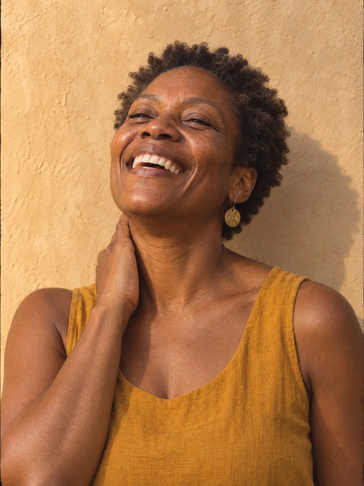
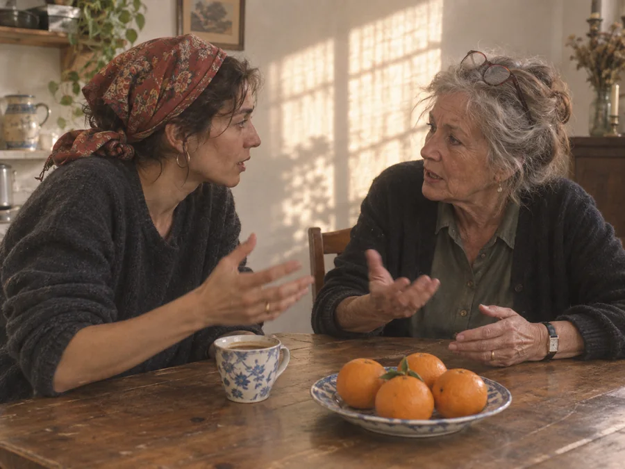

A Carta · Edição zero
A vida inteira começa onde?
Sobre as palavras que usamos para falar de nós, e sobre quem as escreveu primeiro.
Ler a carta
A edição zero
Podes começar por onde te disser mais. As secções estão no topo da página, e cada peça indica o tempo que pede.
A menopausa pode ser uma libertação. Ninguém o anuncia.
Trinta e cinco anos de vida depois dos cinquenta. O fim da dor menstrual, da contraceção e do medo de engravidar. A parte que ninguém conta.
Cultura · Uma mulher, uma obraMaria Lamas percorreu o país para contar as mulheres que ninguém contava
Dois anos na estrada, fascículos contra a censura, três prisões pela PIDE.
Mundo · As mulheres do climaO calor não é neutro
A cientista que escreve os relatórios do IPCC e a advogada que leva o Estado a tribunal.
AutonomiaO salário igual chega tarde
A diferença não nasce no primeiro contrato. Cresce nas promoções que não se pedem e nos anos em que se interrompeu a carreira.
IdentidadePorque é que ainda se diz idade de risco?
A expressão nasceu na obstetrícia e saiu de lá. O que acontece quando o vocabulário clínico descreve uma pessoa inteira.

A carga mental tem nome
Não é ajudar mais em casa. É deixar de ser a pessoa que se lembra de tudo por todos.
CorpoOito anos até a dor ter nome
Uma em cada dez mulheres em idade reprodutiva. O diagnóstico chega tarde em Portugal, e isso está a mudar.
CorpoO corpo aos cinquenta não pede desculpa
Sobre a invisibilidade que se pede às mulheres a partir de certa idade, e sobre a recusa em pagá-la.
ViverO que sobra quando a vida aperta
A amizade não se mede em jantares. Mede-se em quem atende o telefone às onze da noite.
A vida inteira começa onde?
A carta que abre a edição zero, e a razão pela qual esta revista não vai dizer às mulheres o que devem sentir.
INTEIRA
A carta semanal da WOMAN'S. Uma ideia por domingo, entre seiscentas e oitocentas palavras. Sem promessas de transformação e sem ruído.
Subscrição
A INTEIRA abre quando estiver ligada a um serviço real de subscrição. Até lá, quem quiser receber o primeiro número escreve para hello@womansmag.pt. Não há formulário porque não há recolha de dados.